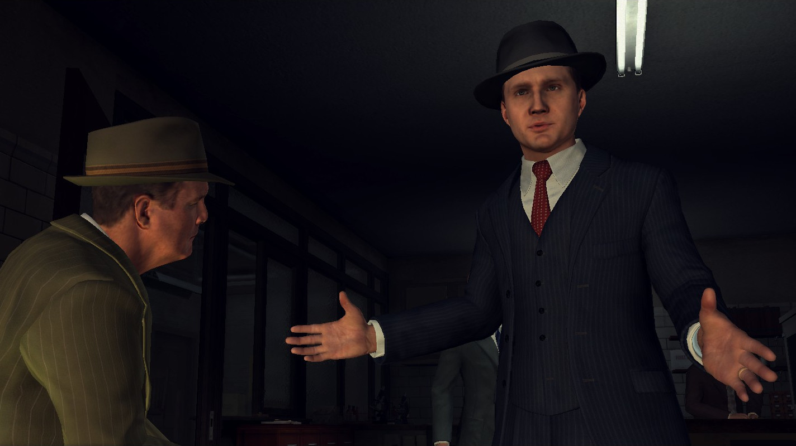

We're told that there has been some new evidence found related to the Deidre Moller case (The Golden Butterfly), but we don’t care. There's been a homicide at the railroad tracks on the east side of the map, no time to waste. Literally.
Walking out of the office, turn right and head down the set of stairs. The central entrance will be on the right side and should be open. Have Galloway take you to the crime scene.
Skip the cutscene to have an unskippable mini drive over to the crime scene. Skip the following cutscene after that.
After talking with Officer Hart, jog over to the yellow blanket with the purse to inspect the two other clues beside it: the matchbook and the grocery list.
After inspection, go back to the cars and head for the gamewell to get an address on the closest Levine’s Liquor Store. Meanwhile, use the map to marker over to Mensch’s Bar.
Once the call is done, have Galloway take you to Mensch’s.
When you skip the arrival cutscene, immediately hold forward while tapping the talk button to question Grovsenor McCaffrey.
Well that didn’t get anywhere, have Galloway take you to Levine’s Liquor and see if we can get more information on Ms. Summers.
Skip the arrival cutscene and immediately jog forward towards the doors and head around the boxes into the lit tent. Inspect the book at the far right end of the tent, and inspect it further to reveal who the book really belongs to.
Put down the book, and backtrack your way back to Mr. Robbins to question him. You can actually completely skip the middle question. Spam O, B, or RMB after asking the first and last question.
After talking with Mr. Robbins, manually marker to Central Station using the map and have Galloway take you there. You don’t need to answer the radio call at all, just skip over it.
This will be a fast trip to the Technical Services room. Head straight across past the interview room, past the double doors, and down the stairs. Turn left at the stairs to enter the Tech room, and hold forward as you skip the cutscene. Then use the phone that you passed along the way to get an address on McCaffrey’s while Galloway waits outside.
Marker over to McCaffrey’s and have Galloway drive you out there.
Upon arrival, head through the double doors and go up a flight of stairs opposite the lights on the left. Across the hall and around the left corner should be Apt. 6 with a golden handle.
Phelps will eventually kick the door down by holding forward. Turn left after you do to investigate the lug wrench from Rawling’s Bowling Alley.
Skip the cutscene after putting down the tire iron. Go out the door and climb another flight of stairs. Head around the right corner, go through the doorway on the right, and climb the stairs to trigger another cutscene.
This will ensue a footchase with drunk McCaffrey.
Follow McCaffrey across the bridge and all the way until you pass the guy fixing up his car. Cut across the street to the left of the blue house and run towards the inside fence of the light blue house across the way.
Jump over the fence and mash on A, X, or LMB to tackle McCaffrey. This will end the chase.
Have Galloway take you to Rawling's Bowling Alley.
Before you’re able to control Phelps, you should see Tiernan running away into a hallway. Follow him to ensue a car chase.
Instead of chasing after him, head the complete opposite way that he goes to fail the chase. Do this three times to skip the chase sequence.
Now have Galloway take you back to Central Station to question the two apprehended suspects.
First go to Tiernan, who will be in Interview Room 1 on the left.
Exit the interrogation with O, B, or RMB, and then get up from the chair by pressing △, Y, or F. I know, it's weird, but that's classic Rockstar game design for you.
Now go to McCaffrey who is in Interview Room 2
Go back to Tiernan and apprehend him after this final question